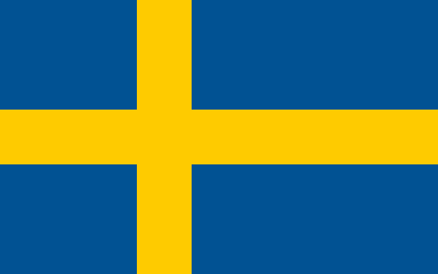

Información General
Director Técnico: Jon Dahl Tomasson
Capitán: Victor Lindelöf
📖 Historia Mundialista
Suecia es una de las selecciones más fuertes de Europa. Fues subcampeona mundial en 1958 y ha participado regularmente en los mundiales desde 1958 y destaca por su disciplina táctica, velocidad y excelente formación de jugadores.
💡 Curiosidades
Fue anfitriona del Mundial 1958. Zlatan Ibrahimović es su jugador más emblemático.
🏆 Participaciones Mundialistas
- 1934 — Italia
- 1938 — Francia
- 1950 — Brasil
- 1958 — Suecia
- 1970 — México
- 1974 — Alemania
- 1978 — Argentina
- 1990 — Italia
- 1994 — Estados Unidos
- 2002 — Corea/Japón
- 2006 — Alemania
- 2018 — Rusia
📊 Estadísticas Principales
| Mejor resultado | Subcampeón (1958) |
| Títulos Mundiales | 0 |
| Goleador histórico | Zlatan Ibrahimović (62 goles) |
| Más partidos | Anders Svensson (148 partidos) |
⚽ Partidos Mundial 2026
-
vs Túnez
📅 15 de Junio de 2026
🕒 16:00
🏟️ Mercedes-Benz Stadium -
vs Países Bajos
📅 20 de Junio de 2026
🕒 20:00
🏟️ AT&T Stadium -
vs Japón
📅 26 de Junio de 2026
🕒 18:00
🏟️ Lumen Field
⬅ Volver al Grupo F